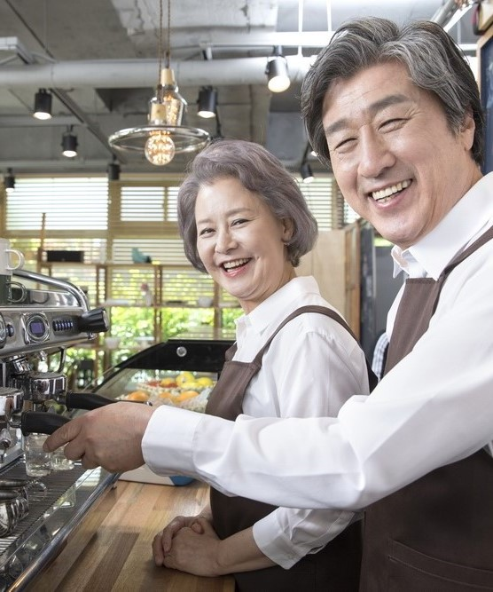

저출산 문제를 근본적으로 해결할 수 있는
방향으로
과감히 수정·보완되어야 한다
우리나라가 저출산 문제의 심각성을 인식하고 대책을 마련하기 시작한 것은 2006년부터다. 이후 14년간 세 차례 정권이 바뀌면서도 총 185조 원이라는 천문학적인 예산을 투입했다. 그 결과가 오늘의 지표다. 출산 지원정책이 빗나가고 있다는 반증이다.
국내 해결방안
① 통합수업 활성화 및 투자
학생들의 사회성 발달, 교육행정 효율성 등에 불리한 학생희소학교의 문제를 최소화하기 위해 초·중 또는 중·고 통합학교나 학교 간 통합수업을 활성화해야 한다. 지방대학의 경쟁력을 확보하기 위해 교육부의 권한을 지자체에 이양하는 동시에 중앙정부 차원에서 지방대학과 산업 간 연계를 강화하기 위한 투자를 과감하게 늘릴 필요가 있다. 종합대학이 보편적인 대학 체계를 일부 단과대학 중심의 특성화 대학으로 전환하여 학생 수가 적으나 강한 대학들이 지역적으로 균등하게 배치될 필요가 있다.
초고령사회를 목전에 두고 저출산 문제 해결을 위한 중장기 정책의 효과를 마냥 기다리고 있을 수만은 없는 노릇이다. 통계청의 경제활동인구 조사 결과를 분석해 보면 2018년 생산가능인구(15~64세)는 3,679만6,000명으로 2017년보다 6만3,000명 줄었다. 내년에는 생산가능인구가 24만3,000명 줄고 2025년에는 42만5,000명 감소할 것이라고 예상된다. 의학 기술의 발달로 건강 상태가 개선되고 평균 수명이 증가함에 따라 65세 이상의 경제 활동이 활발해지고 있다. 해당 연령대의 취업자는 2011년부터 작년까지 8년간 꾸준히 증가해 온 것으로 조사됐다. 이런 시대 흐름을 타 노인 연령을 65세에서 70세로 상향 조정하면 생산가능인구를 늘리면서 고령화 속도를 늦출 수 있다. 정부는 노인 연령을 70세로 상향하면 2040년에 생산가능인구가 424만 명 증가하고, 고령인구 비율을 8.4% 감소할 것으로 내다보고 있다. 물론 노인 연령 상향 조정은 심각한 부작용과 반발을 가져와 사회 갈등을 초래하게 될 수도 있다. 노인 연령은 기초연금, 국민연금, 건강보험, 장기 요양보험, 지하철 무임승차 등과 같은 각종 복지혜택과 관련돼 있다. 노인 연령 70세를 법제화하면 노인들이 누리고 있는 각종 복지 혜택들이 그만큼 줄어들어 저항이 심할 수 있다. 그러나 전 세계를 두고 봐도 가장 빠른 속도로 고령화되어 가는 국가재난 상황과 같은 현실 속에서 노인 연령 기준 상향은 불가피해 보인다. 국민연금이 노령연금의 수급 자격을 60세에서 65세로 단계적으로 높여간 선례 등을 참고해, 지속해서 연구하며 각 부처 및 지자체가 협의해 나가야 할 것이다. 사회적 반발을 최소화하기 위한 설득과 국민적 합의가 필요한 것은 물론이다.
② 노인 고용 확대 추진
출산율을 높이는 데 전력을 기울이는 한편, 노인 노동력을 적극적으로 활용하는 방안도 간과해서는 안 된다. 현재 65세로 규정돼 있는 노인 연령을 70세로 상향하자는 주장이 탄력을 받는 만큼 이러한 논의를 생산적으로 이어갈 필요가 있다.

③ 출산 친화적 사회 분위기 조성
한국에 앞서 저출산 문제를 경험했지만 비교적 성공적으로 극복해낸 나라들도 있다. 프랑스, 영국, 스웨덴 등이 그러하다. 이들 국가의 공통점은 전국민적인 공감대 위에서 과감한 재정 지원을 통해 출산과 육아에 친화적인 사회 분위기를 조성했다는 것이다. 저출산 문제를 해결하기 위해서는 단순히 출산만 장려할 것이 아니라 출산 친화적 사회 분위기를 조성해야 한다.
세종시의 작년 출산율은 1.57명으로 서울 출산율(0.76명)보다 2배 이상 높은 수치로 전국 출산율 1위를 차지했다. 세종시가 전국에서 가장 출산 친화적이란 통계는 공무원이 밀집된 도시 성격과 무관치 않다. 공무원은 남녀 모두 출산휴가, 육아휴직을 비교적 자유롭게 쓸 수 있고 또 휴직 후 복직도 보장되어 있다. 한유총(한국유치원총연합회) 문제로 유치원 개학 연기 사태가 벌어져도 세종시는 국공립유치원 비율이 95%에 가까워 걱정할 필요가 없었다. 즉 모든 국민이 제도적으로 공무원 수준의 출산 친화적 근무 환경을 제공받는다면 출산율이 높아질 것이라고 추론할 수 있다. 저출산 문제를 사회 전체의 위기로 인식하고 함께 해결책을 모색하는 인식 변화도 절실하다. 대다수 개인은 인구절벽이 그리 큰 문제라고 생각하지 않는다. 인구가 줄어들면 좁은 땅덩어리에 인구 밀도가 지나치게 높아 발생하는 여러 가지 골치 아픈 문제가 해결되지 않겠느냐는 주장까지 나온다. 하지만 현재의 저출산 문제는 인구 규모의 문제가 아니라 인구 구조의 문제라는 점을 인식해야 한다. 인구가 1% 줄어든다고 할 때 모든 연령대의 인구가 똑같은 비율로 줄어드는 것이 아니라 경제활동인구만 대폭 줄어들기 때문에 모두가 힘들어지는 것이다. ‘한명의 아이를 키우기 위해서는 온 마을이 필요하다’는 아프리카 속담이 있다. 부모가 아이를 걱정 없이 낳을 수 있는 사회를 만들려면 정부와 개인이 동시에 나서 출산과 육아 친화적 분위기를 조성하기 위해 노력해야 한다.
해외 사례 및 해결방안
독일 사례 및 해결방안
스웨덴 사례 및 해결방안
프랑스 사례 및 해결방안